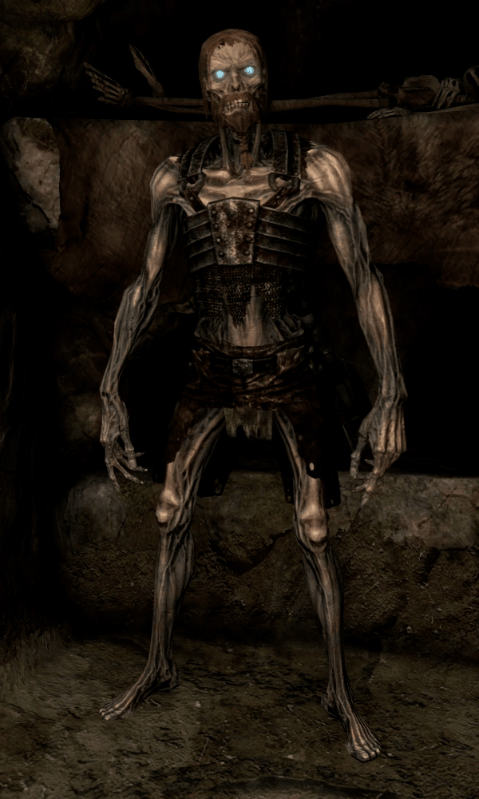

 Draugr o draug (original plural nórdico antiguo: draugar, o draugen en noruego, sueco y danés, significa "el draug"), también conocido como aptrgangr (literalmente "el que camina de nuevo", o "el que camina después de la muerte") es una criatura clasificada como un no muerto en la mitología nórdica.
Los draugrDefinicion poseen fuerza sobrehumana, pueden crecer de tamaño a voluntad y llevan consigo el hedor inconfundible de la putrefacción. La habilidad de crecer a voluntad es proporcional al incremento de peso, y el peso de un draugr se describe como extremadamente pesado. El personaje de Thorolf en la saga Eyrbyggja era un ser «incorrupto», de fea apariencia
En el folclore los draugar matan a sus víctimas usando varios métodos, aplastándolos con su cuerpo voluminoso, devorando su carne o tragándolos enteros en sus formas más enormes, también indirectamente volviendo locas a sus presas o bebiendo su sangre. Los animales que comen cerca de una tumba de un draugr pueden verse inmersos en la locura por la influencia de la criatura,y pueden morir. Thorolf de la saga Eyrbyggja, por ejemplo, mataba a los pájaros que revoloteaban sobre su montículo y caían muertos sobre el sepulcro. Pueden también inducir a la demencia.